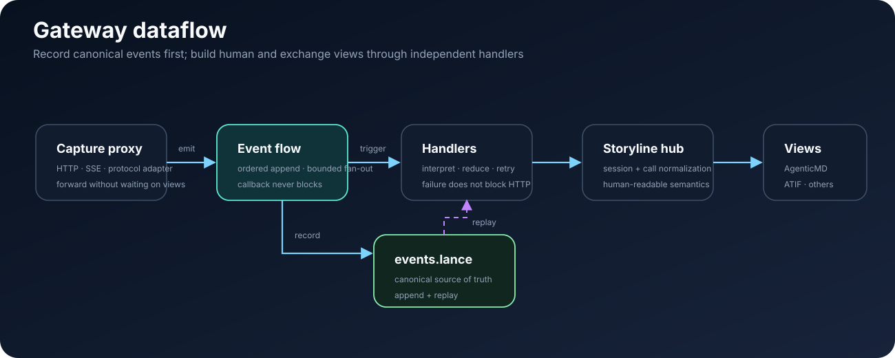
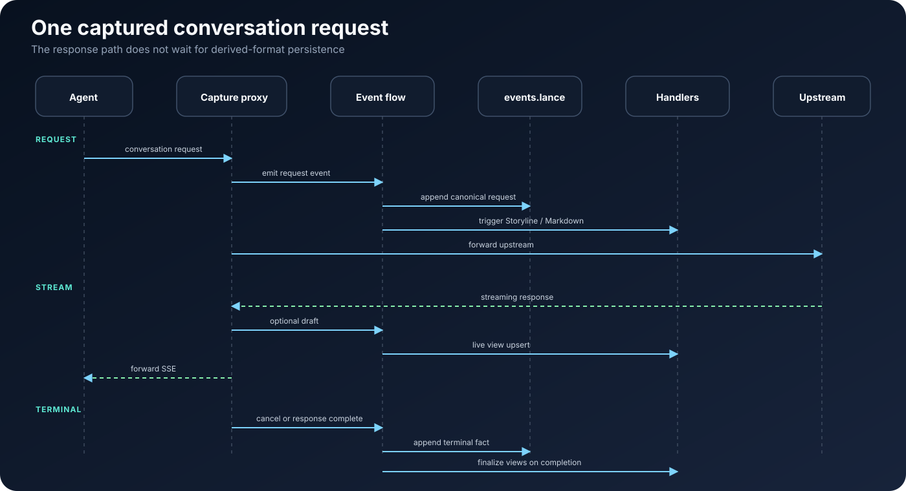

pVisor Gateway — 架构与设计¶
本文负责模型路由、协议适配、非阻塞 capture 与 event emission。如何捕获一次 Run 属于 Capture 指南；capture 之后的事实与投影 ownership 属于 pChronicle 轨迹存储。
读者：需要在 Agent 与 LLM 之间落地可观测、可回放、可审计轨迹的平台工程师、架构师与集成方。 版本：1.1（对外） | 最后更新：2026-07-30
本文描述 Persisting Gateway 的产品定位、核心概念与架构取舍。实现细节（块格式字段表、CLI 参数、目录布局）见文末延伸阅读；文中尽量避免绑定具体源码路径。
目录¶
- 摘要
- 问题与价值
- 设计原则
- 核心概念
- 系统全景
- 数据流：从 HTTP 到轨迹（含 §6.4 多模态）
- 存储与一致性
- 网关与协议
- 多 Agent 与会话
- 可靠性与运行形态
- 演进方向
- 延伸阅读
1. 摘要¶
Persisting Gateway 是 coding agents 的轨迹观察层：让 Claude Code 或 OpenAI Codex 通过 persisting-overlaynet 的本地显式代理运行，即可得到可回放的事件流，并由 pChronicle 完成结构化落盘。
主链路：
HTTP ──► events 流
├─ 记录（append → events.lance，SoT）
└─ 触发（订阅 / handler）
└─ 格式转换（经 storyline hub）+ 落盘
（agenticmd / atif / openai_msg / …）
它是 overlaynet 代理之上的可嵌入 事件观察器与状态机。在已支持的客户端上，通过 pvisor run 注入代理或显式设置模型 API 地址，即可在不修改业务代码的前提下：
- 透明转发对话流量到上游模型；
- 把每次 HTTP 交换写入 events 流（可持久化、可回放）；
- 由 events 上的订阅触发物化与导出（Markdown、ATIF、openai_msg 等），而不是在代理路径里硬编码多种格式。
Gateway 不是通用企业 API 网关的替代品，也不拥有网络数据面的实现；它作为 OverlayNet sink，围绕 Agent 轨迹（trajectory） 解释代理交换、转发协议并生产事件。
2. 问题与价值¶
2.1 典型痛点¶
| 痛点 | Gateway 的回应 |
|---|---|
| Agent 对话散落在各厂商 API 形态中，难以统一分析 | 归一为统一事件记录，再物化为对话视图 |
| 只要日志不要改代码 | 反向代理 + 环境注入（pvisor run） |
| 需要给人 review 的会话稿 | TLV Markdown：正文可读，元数据在注释中 |
| 流式输出想「边生成边看见」 | Live Markdown upsert（草稿块 → 定稿块） |
| 子 Agent、多 session 易混 | 按故事线分文件 + spawn 关联，不内联全文 |
| 采集不能拖慢 LLM 首 token | 观测不阻断：采集异步化，失败进 dead letter |
2.2 客户端支持（实时采集）¶
| 客户端 | pvisor run 实时采集 |
说明 |
|---|---|---|
| Claude Code | ✅ | 主适配目标：Anthropic Messages、subagent 分轨、history replay 去重 |
| OpenAI Codex | ✅ | Responses API 路径；通过 -c openai_base_url=… 等注入网关 |
| Cursor | ❌ | 当前版本不支持（无官方注入与流量适配） |
| 自研 / 通用 OpenAI SDK | ⚠️ | 若客户端走 HTTP_PROXY 或 OPENAI_BASE_URL / ANTHROPIC_BASE_URL，可尝试接入，无专项保证 |
事后从 IDE 本地 JSONL import 的路径以 CLI 文档为准；Cursor 本地日志导入亦在规划中，与上表「实时采集」无关。
2.3 能力边界¶
擅长
pvisor run内嵌 Gateway 对 Claude Code / Codex 的对话采集；- Claude Code 场景的 history replay 去重、subagent 分轨；
- Codex 场景的 Responses ↔ Completions 桥接与上下文注入过滤；
- Lance 全量事件 + Markdown 物化视图的双层存储；
- 轻量模型路由、协议桥接（Messages / Completions / Responses 等）。
不替代
- 多租户计费、复杂 RBAC、MCP/A2A 联邦等企业网关（可参考 agentgateway 类方案）；
- 100+ 厂商的一站式 SDK（可参考 LiteLLM 类方案）；
- 终端命令输出的 token 压缩（与 RTK 等工具互补）。
2.4 在 Persisting 生态中的位置¶
Agent 客户端
│ HTTP
▼
┌─────────────────────────────────────┐
│ Persisting Gateway │
│ HTTP → events 流 │
│ · 记录 → events.lance（SoT） │
│ · 触发 → storyline → 格式落盘 │
└──────────────┬──────────────────────┘
│ events / 派生产物
▼
┌─────────────────────────────────────┐
│ pChronicle / 分析 / 检索 │
└─────────────────────────────────────┘
3. 设计原则¶
| 原则 | 含义 |
|---|---|
| 观测不阻断 | 用户请求的延迟与成功率优先；采集失败写入 dead letter，不因写盘失败而中断 HTTP 响应。 |
| HTTP → events | 代理主产物是 events 流（HTTP-first wire）；不是直接写 Markdown / ATIF。 |
| 记录与触发分离 | 同一条 event 可 append 落盘，也可 fan-out 触发下游 handler；二者解耦。 |
| 转换经 hub | 物化 / 导出经 storyline（ATIF-aligned）再落到各格式；禁止外围格式两两直转。 |
| Lance 为事实源 | canonical 仅 events.lance；Markdown / ATIF 等是派生落盘，允许有损。 |
| 单一写入门 | 进入 Lance 的 append 经统一引擎路径，避免双写竞态。 |
4. 核心概念¶
4.1 主链路¶
Agent HTTP
│
▼
overlaynet proxy（CONNECT / 转发 / 网络策略）
│
▼
Gateway Sink（LLM 协议适配 + 发出轨迹观测）
│
▼
events 流 ────────────────────────────────────────┐
│ │
├─ 记录 append ──► events.lance（SoT / replay） │
│ │
└─ 触发 handler ──► interpret / fold │
│ │
▼ │
storyline（hub） │
│ │
┌────────────┼────────────┐ │
▼ ▼ ▼ │
agenticmd atif openai_msg … │
│ │ │ │
└──────── 落盘 / 物化 ─────┘ │
│
（可选）从 Lance 重放 ──────────────────────────────┘
要点：
- overlaynet 负责代理机制：请求分类、CONNECT、绝对 URI 转发、出口策略与连接计数。
- Gateway Sink 负责业务语义：LLM 路由/协议转换、session 关联与 capture event，不实现第二套代理。
- events 流是总线：可记录、可订阅；同一条记录可同时落盘与触发。
- 格式转换与落盘是下游：经 storyline hub，输出 agenticmd / atif / openai_msg 等。
辅助坐标（会话边界，非 SoT）：
| 概念 | 说明 |
|---|---|
| Run | 一次 pvisor run / 根工作区 |
| session | 一条 Agent 会话线（≈ ATIF session_id / storyline session） |
| call_id | 关联同一次 HTTP 往返的 request/response（events 信封字段） |
4.2 分层¶
┌─────────────────────────────────────────────────────────────┐
│ 协议层：HTTP、SSE、OpenAI / Anthropic / Responses │
│ 职责：转发、翻译；发出 HTTP-first 观测 │
└───────────────────────────┬─────────────────────────────────┘
│ emit
▼
┌─────────────────────────────────────────────────────────────┐
│ events 流 │
│ 职责：有序事件；append 记录；fan-out 触发 │
└───────────────┬─────────────────────────┬───────────────────┘
│ record │ trigger
▼ ▼
events.lance handlers（interpret）
│
▼
storyline → 各格式落盘
Ingress：协议层 → events（尽量保留 wire；摘要字段可选）。 Egress：events 重放 / 订阅 → storyline → 派生格式落盘；与采集主路径解耦。

4.3 写路径与派生路径¶
| 写路径（记录） | 派生路径（触发） | |
|---|---|---|
| 输入 | Proxy / import 发出的 event | 已进入流的 event（实时或重放） |
| 输出 | events.lance append |
storyline 及 agenticmd / atif / … |
| 失败策略 | dead letter；不阻断 HTTP | 独立重试；不影响 SoT |
| 保真 | HTTP-first，目标可回放 | 允许有损折叠 |
Live Markdown、轮次索引等视为 events 触发的一类 handler，不是与 events 并列的第二事实源。
5. 系统全景¶
5.1 逻辑组件¶
┌──────────────┐
│ Agent 进程 │
└──────┬───────┘
│ HTTP(S)
▼
┌────────────────────────┐
│ Capture Proxy │
│ · 路由 / 鉴权 │
│ · 协议桥 / 流式转发 │
│ · emit → events 流 │
└───────────┬────────────┘
│
┌───────────────┼───────────────┐
▼ ▼ ▼
┌────────────┐ ┌────────────┐ ┌────────────┐
│ events 引擎 │ │ 上游 LLM │ │ 会话索引 │
│ · 记录 │ │ │ │ │
│ · 触发 │ └────────────┘ └────────────┘
└──────┬─────┘
│
┌─────┴──────────────────┐
▼ ▼
events.lance handlers → storyline
（SoT） → agenticmd / atif / … 落盘
| 组件 | 职责 |
|---|---|
| Proxy | 唯一 HTTP 入口；转发上下游；把观测 emit 进 events 流（不直接写多种格式）。 |
| events 引擎 | 维护有序流：记录（append Lance）与 触发（fan-out handlers）。 |
| 记录路径 | WAL → per-session 有序 apply → events.lance。 |
| 触发路径 | 订阅 events → interpret → storyline → 各格式落盘 / Live Markdown。 |
| 会话索引 | 轻量 sessions.json：列表、token、费用估算。 |
| 对账与 dead letter | SoT 与派生落盘一致性；失败事件可重放。 |
5.2 集成方式（概念）¶
- 库嵌入：Rust 工程可挂载 OverlayNet 与 Gateway sink，并自行提供轨迹 event sink。
- CLI：
pvisor run包装子进程并管理 Run-scoped Gateway 生命周期。 - 配置：TOML 声明监听地址、模型路由、采集级别、存储根目录；无需改 Agent 源码。
公开 API 以模块边界发布（代理、引擎、记录、轨迹、会话），避免扁平导出 hundreds 个符号；故事读模型主要通过快照与对账产物对外可见。
5.3 与 agentgateway 的关系¶
Gateway 在配置语义与路由模型上借鉴 agentgateway 子集，并可用其 fixture 做协议回归；运行时互不依赖。定位差异：agentgateway 面向集群级多协议网关；Persisting Gateway 面向单点嵌入的轨迹事实源。
6. 数据流：从 HTTP 到轨迹¶
主路径：HTTP → events 流 →（记录 | 触发）→ 落盘。
6.1 一次对话请求（概念时序）¶

要点：
- Proxy 不等待派生落盘完成再响应；先 emit，再继续转发。
- 草稿默认只触发 handler（如 Live Markdown）；完整响应才 记录进 Lance，避免 partial 污染 SoT。
- 派生格式（agenticmd / atif / …）一律经 storyline；可实时触发，也可事后从 Lance 重放再触发。
6.2 采集事件与记录类型¶
写路径用少量事件种类驱动一切持久化：
| 事件 | 典型效果（Dialogue 级别） |
|---|---|
| 请求到达 | Lance：请求记录；Markdown：user 块 |
| 流式草稿 | 仅 Markdown：assistant 草稿（可原地覆盖） |
| 响应完成 | Lance：流式/完整响应记录；Markdown：定稿 assistant |
| 调用取消 | 仅 Lance：取消记录 |
| Spawn 关联 | Lance + Markdown：关联元数据（不当作可跳过噪音） |
采集级别（Summary / Dialogue / Full）控制记录粒度；生产默认 Dialogue：
| 级别 | Lance / Markdown 摘要字段 | payload.body |
|---|---|---|
summary |
仅 model、path、字节数 | ❌ |
dialogue（默认） |
user_content / assistant_content 可见对话文本 |
❌ |
full |
同上 + 完整解析后的请求/响应 JSON | ✅ |
省略无关探测流量（如 count_tokens、history replay）的规则与采集级别无关，由物化过滤统一处理。详见本页 6.4 节。
存储记录类型（http.request / llm.request、llm.response.stream、session.* 等）属于 events 词汇，由 Proxy emit；handler 再折叠为 storyline，不必与 HTTP 帧一一对应到对话轮。
6.3 流式与人读视图¶
- 草稿块带明确标记；定稿时按 call + 角色 覆盖同一块，避免重复段落。
- 块头 schema 带版本号（
v: 1），便于将来演进线格式而不改文件后缀。
详见 AgenticMD 格式。
6.4 可见对话提取（含多模态）¶
Gateway 在 Dialogue 级别下，从客户端原始 HTTP body（而非 upstream 转换后形态）提取「人读可见」正文，写入 payload.user_content / payload.assistant_content，并驱动 Markdown 块正文、frontmatter turns 与派生统计。
统一入口：dialogue_extract 模块；按 wire 协议分支：
| 客户端 / API | 典型路径 | 用户输入 | 助手输出 |
|---|---|---|---|
| Claude Code | /v1/messages |
content[]：text / image / tool_result |
SSE / JSON：text / tool_use |
| Codex | /v1/responses |
input[]：input_text / input_image / tool 往返 |
SSE / JSON：output_text / function_call / image_generation_call |
| OpenAI SDK | /v1/chat/completions |
messages[]：text / image_url |
choices[].message / 流式 delta |
多模态 Phase 0（当前）：图像不写入 blob，仅在 dialogue 字符串中留占位符，保证 turns 计数与 review 时「知道有图」：
| 方向 | 占位符示例 |
|---|---|
| 用户输入（URL） | [image: url:https://…] |
| 用户输入（base64 / data URL） | [image: base64:128KB image/png hash=abc…] |
| 助手出图（Codex Responses） | [image_generated: ig_xxx, png, 1024x1024, ~1MB] + 可选 prompt: … |
纯图无文字的用户 turn 仍计为 1 轮（修复「有图无文 → stats 0 turns」）。
capture_level = full 时完整 JSON 仍在 payload.body，但 Markdown 物化仍只展示占位符，不嵌入像素数据。
后续（规划）：sidecar 资产目录 {run}/assets/{call_id}/… + payload 引用；内部
materializer 可以输出指向 assets/… 的 Markdown 图片。当前公共 pchronicle CLI 不为
这项规划预留命令。见本页 11 节演进方向。
协议回归：crates/persisting-gateway/tests/ag_fixture_tests.rs + tests/support/ag_capture_cases.rs（agentgateway fixture 矩阵）。
7. 存储与一致性¶
双层存储、目录约定、materialize/import 路径见 轨迹存储模型。
7.1 双层存储¶
| Lance（事实源） | Markdown（物化视图） | |
|---|---|---|
| 读者 | 程序、检索、replay | 人、git、review |
| 完整性 | 无损（在采集级别内） | 有损：过滤内部与重复 history |
| 写入 | append 到 events.lance |
live upsert 或批量 append / 全量 materialize |
| 关系 | 行数 ≥ 块数（物化只减不增） | 从 Lance 重建可修复漂移 |
7.2 物化过滤（统一策略）¶
无论实时写入还是事后 materialize，同一套规则决定某条事件是否出现在 Markdown 中，例如：
- 内部
count_tokens、影子模型预热； - Claude Code 式 history replay（用户消息计数未增加的重发）；
- 无可见正文的空记录；
- 纯生命周期、仅-cancel 类记录（保留在 Lance）。
Spawn 关联等「对人仍有意义」的事件不会被误杀。
7.3 会话摘要（Frontmatter）¶
每个 Markdown 会话文件可带 YAML 摘要：turns、token、估算费用、子 Agent 列表、客户端信息等。
轮次数以故事读模型为准，块内 turn 字段仅作展示启发式，不作为权威计数。
7.4 三轨对账（Reconcile）¶
一次 Run 正常结束时，对每个 session 比对：
| 轨道 | 含义 |
|---|---|
| Markdown | 物化块中的 call 集合 |
| Lance | 事件日志中应对话出现的 call 集合 |
| Story | 从事件重放得到的 call 集合 |
三者一致且结构检查通过，才认为「人读视图与事实源对齐」。不一致时应用 materialize 或排查 dead letter，而非直接信任 Markdown。
7.5 辅助产物¶
| 产物 | 作用 |
|---|---|
| 事件 WAL | 进程崩溃后重放未确认的采集事件 |
| dead letter | 应用失败或 Lance 刷盘失败的留存与重放 |
| 故事快照 | 退出时固化各 Story 的轮次读模型，供摘要与恢复 |
8. 网关与协议¶
Persisting Gateway 是一个轻量 LLM 协议网关，服务于「本地或团队固定上游 + 采集」，而非替代云厂商控制台。
| 能力 | 说明 |
|---|---|
| 模型路由 | 按配置顺序匹配模型名；支持前缀/通配与单跳 forward。 |
| 协议桥 | 例如 Anthropic Messages ↔ OpenAI Completions；Responses API 在非 OpenAI 上游时降级转换。 |
| 流式翻译 | 统一 SSE 形态；支持 TTFT 观测、推理字段缓存回放。 |
| 鉴权 | 配置文件、环境变量或客户端 Header 注入 API Key；按提供商约定选择 Header 名。 |
网关逻辑严格停留在协议层，不进入故事层状态机，避免「路由规则」与「轮次语义」耦合。
9. 多 Agent 与会话¶
9.1 路由与存储键¶
每个 HTTP 请求绑定一条采集路由：逻辑 session、磁盘上的 storage 键（决定 .md 文件名与 Lance 事件日志路径）、可选 subagent 标识。
Capture run 下，子 Agent 通常写入 agent-{id}.md；主会话写入 run-{id}.md 或扁平 session 名。
9.2 文件隔离不变式¶
- 子 Agent 正文只出现在 agent-* 文件；
- 主 Agent 的 spawn 引用与链接出现在 run- 文件，不内联*子 Agent 全文；
- 块头 JSON 承载机器可读关联；正文脚注仅辅助人读（解析 roundtrip 时会剥离脚注行）。
9.3 Spawn 关联¶
主 Agent 助手消息中的 spawn 提示与子 Agent 首包注册可能时间错开。系统用 Run 级注册表做延迟匹配与回填，使主会话在事后仍能看到「调用了哪个子 Agent、轨迹文件在哪」。
9.4 单 run dataset 多 session_id（Claude run bucket）¶
一次 pvisor run --chronicle-mode spawn 的 pChronicle sidecar 通常在 run 目录写一个
events.lance/ dataset，但行内 session_id 可能混存多个值。旧值 lance 是
spawn 的兼容别名，pVisor 不直接打开 Lance：
| 典型来源 | session_id 取值 |
|---|---|
| pVisor 生命周期 / Run 头 | run-{uuid}（与目录名一致） |
| Claude Code 对话 HTTP | header 注入的 UUID（与 run id 不同） |
因此内部统计展开 run bucket（session_id == root_session_id）时，会先读 Lance 中 distinct
session_id，再逐分区统计，避免“第二个 session 显示 0 turns”。实现位于
persisting-pchronicle::expand_story_locations；当前公共 CLI 通过 analysis 和 query
暴露统计能力。详见轨迹存储的 run bucket 分区说明。
10. 可靠性与运行形态¶
10.1 可靠性模型¶
请求线程 ──► 发事件（WAL 非阻塞入队 + apply 入队）──► 继续转发
│
└──► 后台：有序 apply ──► pChronicle sidecar / Markdown
│
├─ 成功 → 确认 WAL
└─ 失败 → dead letter + 保留 WAL（重启重放，不影响 HTTP）
| 机制 | 目的 |
|---|---|
| 异步 apply | 采集不占用上游连接线程 |
| Blocking sink 隔离 | sidecar durable ACK wait 运行在 blocking pool，不占用 Gateway Tokio HTTP worker |
| Per-story 有序队列 | 同一故事线内事件顺序可复现 |
| 事件 WAL | 请求线程只做有界 try_send；后台最多等待 2 ms 合批并 sync_data，已落盘事件在崩溃后可重放 |
| ACK WAL | 异步 best-effort 合批；丢 ACK 只会导致安全重放，flush/shutdown barrier 保证已接收 ACK 先落盘 |
| Barrier flush | 优雅退出前排空队列与 Actor 邮箱 |
| Dead letter | 可运维重放，而非静默丢数 |
已知限制（实现仍在加强）：极端崩溃场景下 WAL 序号与重复投递策略、超长会话 Markdown 全文件 upsert 的 IO 成本等——见本页 11 节演进方向。
10.2 运行形态¶
| 形态 | 适用场景 |
|---|---|
pvisor run |
包装一次 Agent 命令（如 claude、codex）；注入代理环境变量并管理内嵌 Gateway |
| pChronicle sidecar / 补 Markdown | --chronicle-mode spawn 由 sidecar 落盘到 events.lance/；需要 live md 时同时启用 --gateway-stream-markdown |
| Dead letter | 保留在 Run storage 中供 pChronicle API 诊断 |
配置示例（节选）：
listen = "127.0.0.1:19080"
admin_listen = "127.0.0.1:9876"
agent_id = "my-team"
capture_level = "dialogue"
[[models]]
name = "deepseek-chat"
upstream = "https://api.deepseek.com/v1"
api_key_env = "DEEPSEEK_API_KEY"
管理端口提供健康与会话列表查询（用量、模型、活跃请求数），便于 sidecar 监控。
11. 演进方向¶
下列为产品级方向，非承诺排期：
| 方向 | 动机 |
|---|---|
| 多模态 sidecar（Phase 1） | 将 base64 / 生成图落盘到 {run}/assets/，Lance 只存引用；支持 materialize 嵌图与可控 replay |
| Cursor 实时采集与 import | 与 Claude Code 对等的注入与 JSONL 导入 |
| Lance dataset 拆分与 compaction | 长 run 下 events.lance/ 过大时的拆分策略 |
| WAL 与序号恢复增强 | 降低 crash 后重复 apply 与 seq 冲突风险 |
| Markdown 追加日志 + 周期性 compact | 长会话 live upsert 的 IO 与 git diff 友好性 |
| 外部定价表 | 摘要费用估算可配置 |
| 故事读模型 enrich | 父子 Story、调用元数据与 spawn 完全闭环 |
| Lance 列布局优化 | 更好利用列存检索，而非大 blob |
| 协议面收敛 | 随行业 API 稳定，收缩长期维护的转换矩阵 |
块格式通过 v: 1 显式版本化；详见 AgenticMD 格式。
12. 延伸阅读¶
| 文档 | 内容 |
|---|---|
| Capture 快速上手 | 上手：构建 CLI、pvisor run、查看轨迹、排错 |
| 轨迹存储模型 | Lance ↔ Markdown 数据流、materialize、import |
| 轨迹 Markdown 格式 | 块结构、字段规范、subagent 脚注、golden 示例 |
| pVisor 命令 | 单 Run 执行、状态与文件系统操作 |
| pChronicle 命令 | Dataset 查询、分析、交换与只读服务 |
可执行示例：
本文随 Persisting Gateway 发布版本更新；若行为与文档不一致，以仓库内测试与 golden fixture 为准。